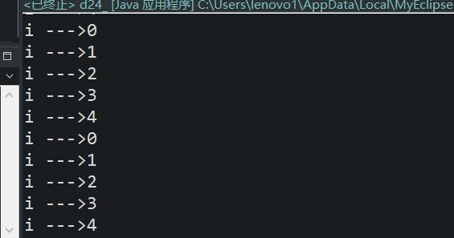
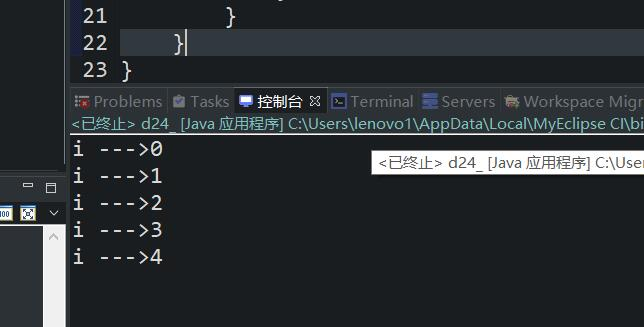
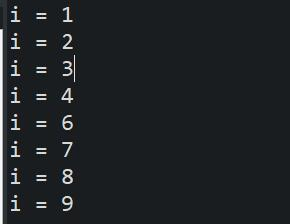
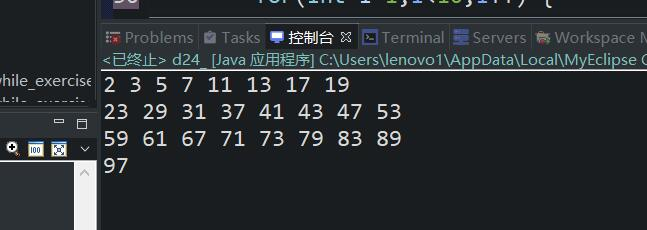

原文连接:https://www.cnblogs.com/ruigege0000/p/11444427.html
一、break
1.break是Java语言中的关键字，被翻译为“中断/折断”
2.break + ";"可以成为一个单独的完整的java语句： break;
3.break语句使用在switch语句中用来终止switch语句的执行
4.break语句同样可以使用在循环语句中，用来终止循环的执行
5.break终止哪个循环？
6.break；语句使用在for\while\do...while循环语句中用来跳出循环，终止循环的执行，因为当循环到某个条件的时候，后续的循环没有必要执行了，在执行也是耗费资源，所以可以终止循环了，这样可以提高程序的执行效率
7.以下使用for循环来讲解break;语句
8.在默认情况下break中断的是离他最近的循环
for(int j = 0;j<3;j++) {
for(int i=0;i<10;i++) {
if(i==5) {
break;
}
System.out.println("i --->" + i);
｝

9.如果我想中断外层循环该怎么办？
解答：需要给循环起名，采用这种语法：break 循环名称
例子：
for1:for(int j = 0;j<3;j++) {
for2:for(int i=0;i<10;i++) {
if(i==5) {
break for1;
}
System.out.println("i --->" + i);
}
}
二、continue语句：
1.continue表示：继续、go on、下一个
2.continue也是一个continue关键字接一个分号来构成一个单独的完整的java语句，主要出现在循环语句当中来控制循环的执行
3.break和continue的区别
（1）break表示结束了，不再执行该循环了
（2）continue表示终止当前“本次”循环，直接进入到下一次循环继续执行。
4.continue也可以指定名字来进行执行continue操作。
for(int i=1;i<10;i++) {
if (i == 5) {
continue;
}
System.out.println("i = "+i);
}

5.练习：输出1~100的之间的素数，八个一行
// 输出1~100的之间的素数，八个一行
int flag = 1;
System.out.print(2 + " ");
for(int i = 2;i<=100;++i) {
for(int j = 2;j<i;++j) {
if(i%j==0) {
break;
}
if(j==i-1) {
System.out.print(i + " ");
flag++;
if (flag%8==0) {
System.out.print("\n");
}
}
}
}

三、源码：
d24_break_and_continue_exercise_and_output_prime_number.java
地址：
https://github.com/ruigege66/Java/blob/master/d24_break_and_continue_exercise_and_output_prime_number.java
2.CSDN：https://blog.csdn.net/weixin_44630050（心悦君兮君不知-睿）
3.博客园：https://www.cnblogs.com/ruigege0000/
4.欢迎关注微信公众号：傅里叶变换，后台回复”礼包“，获取大数据学习资料